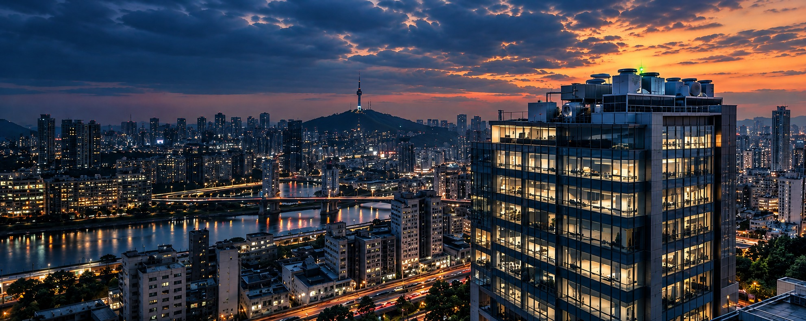
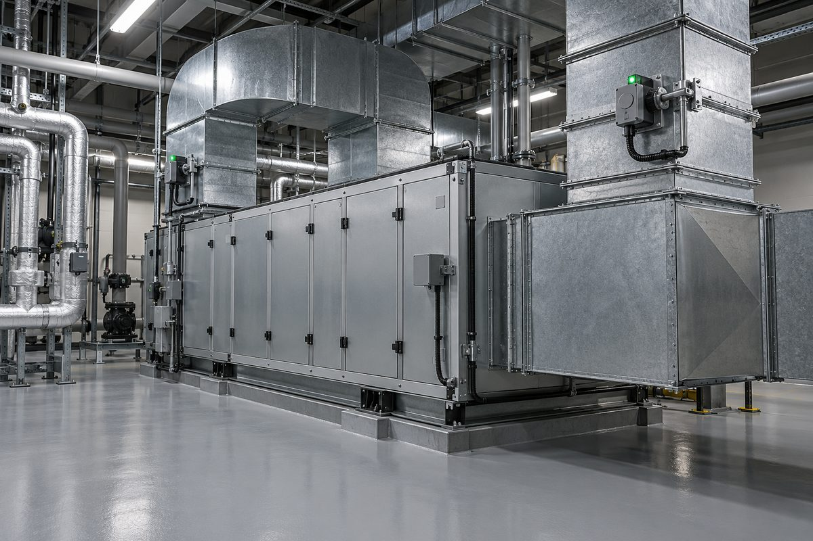
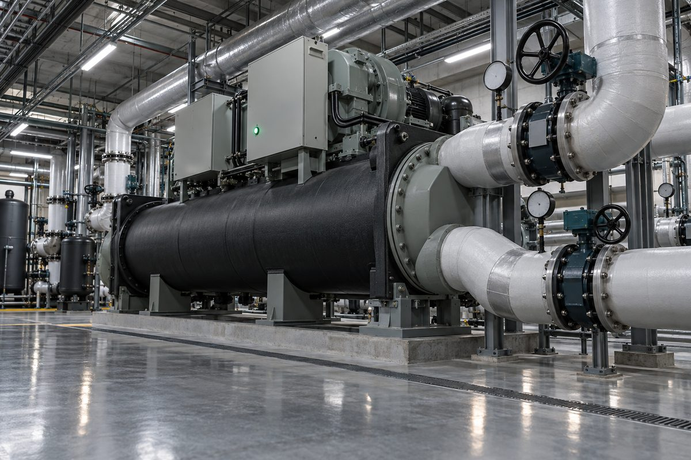
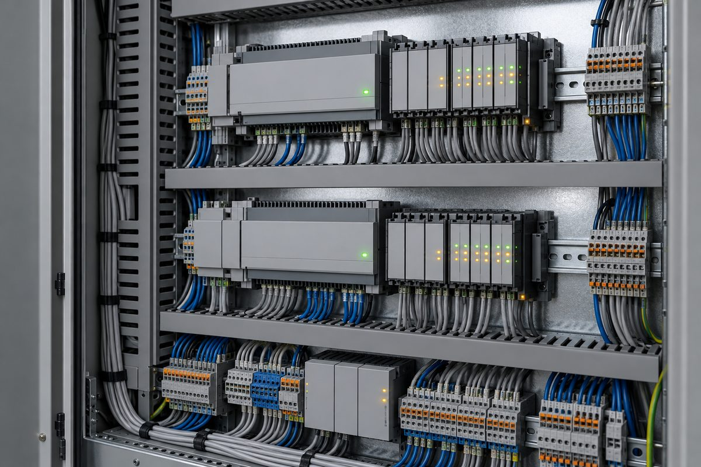
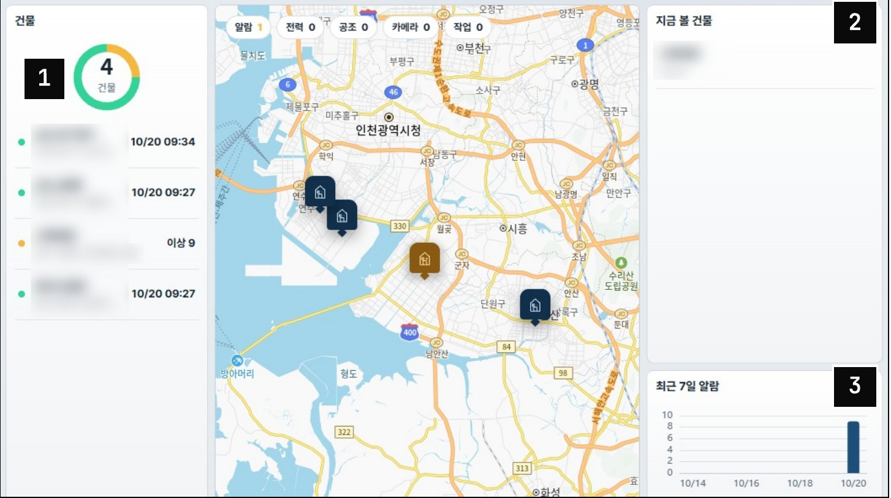
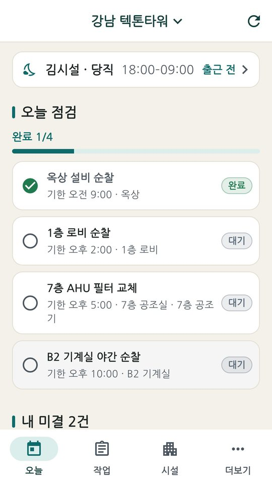
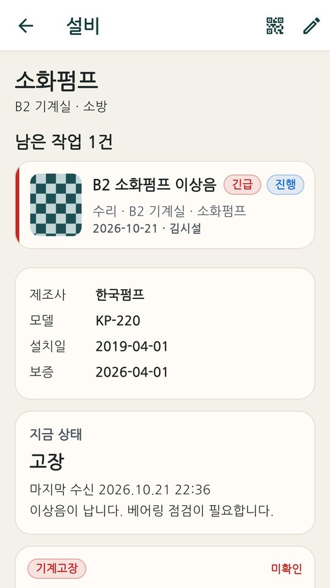
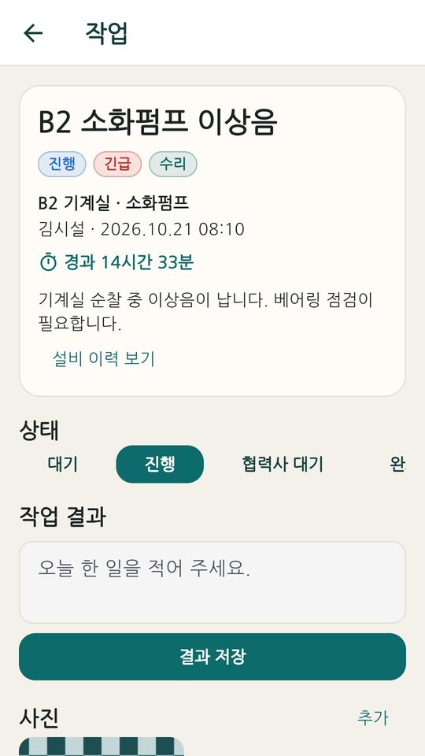
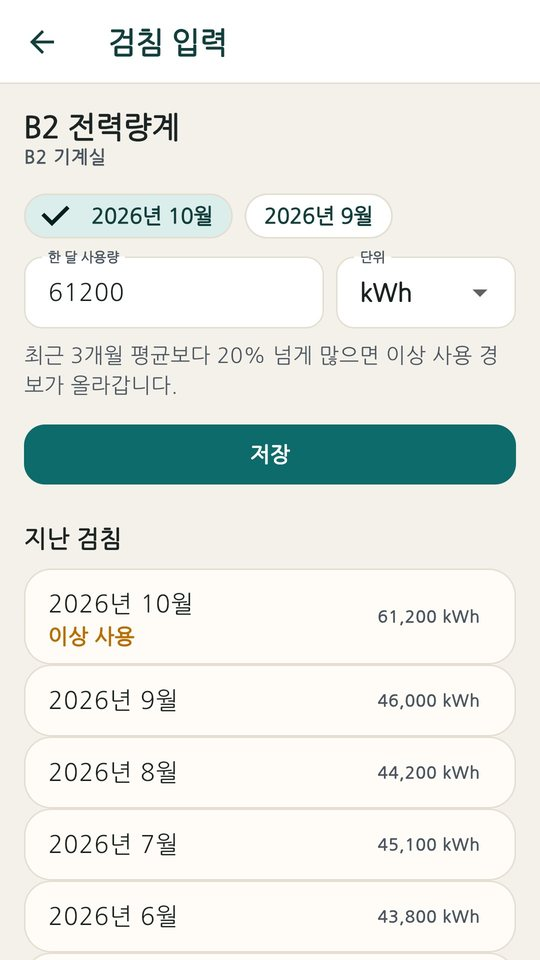
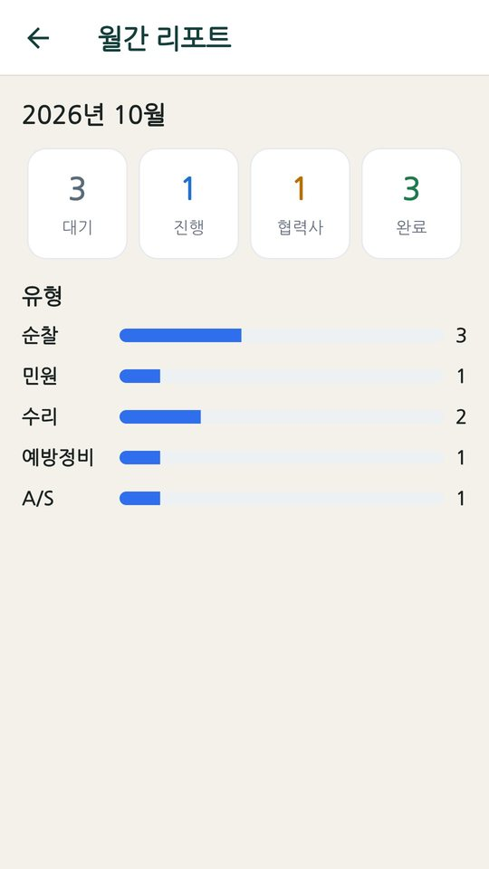

"정상"이라는 보고도,
데이터로 확인합니다.
티아크(T-ARCH)는 기존 중앙감시·자동제어에 읽기 전용으로 연결해 운전 데이터를 자동 분석합니다. 이상·낭비·고장 징후를 근거와 함께 알려드립니다.
그 건물의 설비,
정말 제대로 돌아가고 있습니까?
기록은 있습니다. 읽어낼 사람이 없을 뿐입니다.
사람이 부족하다
숙련자가 떠나면 노하우도 사라집니다.
이상이 안 보인다
경보가 울리지 않는 "조용한 이상"이 쌓입니다.
판단 근거가 없다
교체할지, 설정만 바꾸면 될지 정하기 어렵습니다.
"0"을 보내고 있던 시간
멈춰 있던 비율
자동제어 관제점 수
인천 복합시설 실제 사례(2026년 6~8월)의 값입니다.
설비는 이미
매일 말하고 있습니다.
공조기, 냉동기, 펌프의 상태는 모두 자동제어반에 기록됩니다. 티아크는 그 기록을 매일 끝까지 읽습니다.



이미지는 AI로 연출한 장면입니다
설비는 그대로.
데이터만 읽습니다.
기존 중앙감시·자동제어에 읽기 전용으로 연결합니다. 명령을 보내지 않고, 운전·설정을 바꾸지 않습니다.
기존 설비·중앙감시
지금 쓰는 시스템을 그대로 사용합니다.
읽기 전용으로 연결
데이터만 읽습니다. 명령은 내려가지 않습니다.
티아크 자동 분석
데이터를 믿어도 되는지부터 4단계로 검증한 뒤 판정합니다.
근거가 붙은 리포트
담당자와 관리회사에 근거 데이터와 함께 전달합니다.
오늘 봐야 할 것이
한눈에 보입니다
- 1건물별 상태를 한눈에
- 2지금 봐야 할 건물 제시
- 3최근 7일 알람 추이
실제 화면(2026년 10월) · 건물명은 가림 처리

건물의 모든 판단은
신호 하나에서 시작합니다.
냉수 온도 하나, 댐퍼 개도 하나. 설비는 쉬지 않고 값을 남깁니다.
신호가 모이면
설비가 보입니다.
공조기 한 대에도 온도·압력·댐퍼·팬 운전 같은 관제점이 수십 개 붙어 있습니다.
T-ARCH EDGE가
읽습니다.
현장 미니PC가 기존 자동제어(BACnet/IP 등)에 붙어 15분마다 데이터를 읽습니다. 명령은 보내지 않습니다.
설비가 모이면
건물이 됩니다.
인천의 한 복합시설에는 관제점 312개, 경기도의 한 종합병원에는 2,075개가 있습니다.
믿을 수 있는 값으로만
판정합니다.
값이 믿을 만한지 먼저 확인하고, 규칙으로 판정해 근거와 함께 보고합니다. 근거가 부족하면 "판단 불가"라고 말합니다.
건물 하나에서,
여러 건물로.
지금 병원·업무시설 등 5곳에서 단계적으로 실증하고 있습니다.
그리고
한국의 건물로.
건물 하나의 데이터가 쌓여 도시의 기준이 되고, 한국 건물 운영의 중심축이 되는 것. 텍톤이 가려는 방향입니다.
그래도 사람이 볼 것은
단순해야 합니다.
수천 개의 신호에서 오늘 볼 것만 남깁니다. T-ARCH, 건물의 중심축.
한눈에 보는 티아크 구조
기존 자동제어
- 중앙감시 · DDC
- BACnet/IP · BACnet MS/TP · Modbus
- 교체·공사 없음
현장 수집기
- 현장 미니PC 설치
- 15분마다 읽기
- 읽기 전용 · 명령 없음
분석
- 값을 믿을 수 있는지 먼저 확인
- 규칙으로 판정, 근거와 함께 보고
- 경보 · 트렌드 · 통신상태 · 에너지 성과
- 전기요금 · 피크 · 역률 조언
건물주 · 관리소장
- 건물별 상태를 한눈에
- 월간 업무보고 · 법정 점검 일정
시설 기사님
- 오늘 할 일 · 점검 · 사진 보고
- 설비 QR 스캔 · 검침
데이터는 한 방향으로만 흐릅니다. 티아크는 설비에 명령을 보내지 않습니다.
1년에 한 번 보던 것을,
매일 봅니다.
점검은 그날의 상태를 봅니다. 티아크는 점검과 점검 사이, 설비가 실제로 어떻게 돌았는지를 봅니다.
| 구분 | 법정 성능점검 | 정기 점검 | 티아크(T-ARCH) |
|---|---|---|---|
| 확인 주기 | 연 1회 | 연 12회 | 365일 24시간 |
| 확인 방식 | 사람이 방문 | 사람이 방문 | 기존 자동제어 데이터를 상시 분석 |
| 데이터 검증 | 점검자 판단 | 점검자 판단 | 신선도·고착·급변을 검증한 뒤 판정 |
| 결과물 | 점검 보고서 | 점검표 | 근거가 붙은 리포트와 현장 앱 기록 |
티아크는 법정 점검을 대신하지 않습니다. 점검과 점검 사이를 채웁니다.
제조사가 달라도 연결됩니다
자동제어 장비는 정해진 '공용 언어'로 데이터를 주고받습니다. 대표적인 것이 BACnet(빌딩 자동제어 국제 표준)과 Modbus(설비 업계 공용 방식)입니다. 이 언어를 쓰는 시스템이라면 제조사와 관계없이 연결합니다.
연결 가능: 지멘스 · 하니웰 · 존슨컨트롤즈 · 국내 DDC
우리 건물이 어떤 방식인지 모르셔도 됩니다. 자동제어 업체에 "BACnet이나 Modbus 되나요?" 한 마디면 확인되고, 저희가 대신 확인해 드려도 됩니다.
읽기만 합니다
제어 명령을 보내지 않아 운전·설정이 바뀌지 않고, 운영을 멈추지 않고 적용합니다. 현장 수집기(엣지)가 건물 안에서 수집하며 폐쇄망에도 대응합니다.
설비 운전 데이터만
온도·압력·밸브·댐퍼처럼 설비가 남기는 운전 데이터만 수집합니다. 영상·음성·개인정보는 수집하지 않습니다.
현장에서는
휴대폰 하나로.
알람 확인부터 점검·작업·검침·월간 리포트까지. 관리소장과 시설직원이 같은 화면에서 같은 기록을 남깁니다.
관리단·건물주는 결과를, 관리소장·시설직원은 오늘 할 일을 봅니다. 계정에 배정된 건물만 열립니다.
앱 자세히 보기 →





앱 화면은 예시 데이터입니다 · Google Play · App Store 출시 준비 중
인천의 복합시설.
센서 추가 없이, 기존 데이터만으로.
연구·오피스·상업·주거 4개 용도가 모인 시설을 2026년 6~8월 진단했습니다.
냉각탑이 멈춰 있었다
기준을 넘어도 10번 중 7번은 정지
전력계가 "0"을 전송
순시 전력은 "0", 적산 전력량은 증가
야간 냉각탑 운전
주거동 냉각탑의 야간 가동률
펌프 10대의 7일간 정지는 수동 교대 운전으로 확인해 정정했습니다. 데이터와 현장 확인을 나눠서 보고합니다.
병원·업무시설 등 5곳에서 단계적으로 실증 중입니다(진단 리포트 제공은 본 사례 1곳, 2026년 10월 기준).
문제 1건만으로 연 2,910만원.
그리고 줄줄이 더 있습니다.
운영 중인 병원의 7일간 자동제어 데이터로 계산했습니다. 센서 추가 없이 기존 온도·풍량 값만 썼습니다.
- 예시 장소
- 경기도의 종합병원
- 연면적
- 36,324㎡ (약 1.1만 평)
- 관제점
- 2,075점 · 센서 추가 없음
- 공조기
- 17대 (팬·냉방·난방)
- 분석
- 2026.10.13~21 (7.6일)
화면의 외기 댐퍼는 30%인데, 실제 외기는 최대 90%. 찬 바깥 공기를 필요 이상 들여와 다시 데우는 데 가스를 쓰고 있었습니다. 공조기 17대 중 14대가 그랬습니다.
차이를 잘 보이게 하려고 세로축 2.5억원 아래를 생략했습니다(물결 표시). 가장 낭비가 컸던 날(10/20)을 365일로 환산한 값이며, 7일 평균 기준이면 연 약 1,320만원입니다.
줄줄이 늘어나는 숫자
추정 방법과 단가 보기
전기 173.0원/kWh(한전 일반용 평균 판매단가, 2025) · 가스 29.90원/MJ(서울도시가스 업무난방용, 2026.10) · 보일러 효율 85%(가정) · 냉방 COP 3.9(LBNL 0.9kW/RT) · 정상 외기 최소 30%(가정, 난방 중일 때만 적용)
고객님이 얻는 6가지 효과
멈추기 전에 안다
고장 징후를 일찍 발견합니다.
숨은 낭비를 찾는다
경보에 안 잡히는 손실을 찾습니다.
교체냐, 설정이냐
수선 판단에 근거가 생깁니다.
무리한 운전을 알아챈다
설비 부하를 일찍 발견합니다.
데이터 오류를 잡아낸다
"정상처럼 보이는" 오류를 걸러냅니다.
경험을 건물의 자산으로
담당자가 바뀌어도 근거가 남습니다.
효과는 건물의 설비 구성과 운영 상황에 따라 다릅니다.
안심하고 쓰실 수 있는 이유
교체가 필요 없습니다. 현장 작업은 장비 설치뿐입니다.
읽기 전용입니다. 운전·설정은 바꾸지 않습니다.
규칙으로 판정하고, 근거와 함께 보고합니다.
유지보수는 고장 나면 부르는 일이었습니다.
이제 매일 확인하는 일이 됩니다.
한 번의 도입으로,
모두가 같은 근거를 봅니다.
건물주·운영사
관리비가 어디로 새는지 보인다
- 매년 새던 에너지비를 숫자로 확인
- 큰 고장 전에 징후를 먼저 파악
- 설비 교체 없이 기존 시스템 위에서 시작
관리회사
제안이 설득력을 갖는다
- 월간 운영보고서에 데이터 근거
- 수선·교체 제안에 객관적 근거
- 인수 시점 상태 기록으로 책임 구분
현장 기술팀
경험이 건물의 기록이 된다
- 정상처럼 보여 놓치기 쉬운 이상을 먼저 확인
- 담당자가 바뀌어도 판단 근거가 이어짐
- 운전·설정은 지금처럼 현장이 결정
자산운용사
설비 이력이 자산 설명 자료가 된다
- 보유 기간의 판정 이력이 남음
- 매수자·대주단 실사 때 설명 자료로 활용
- 건물별 상태를 한 화면에서 비교
건물주 동의를 받아 7일간 사전 진단
인수 시점의 설비 기준선 리포트
매일 볼 것만 추리고, 월간 보고에 근거
찾은 문제·조치·재측정 결과가 1년 기록으로
보유 기간의 설비 운영 이력
고객님의 건물에서는
무엇이 발견될까요?
먼저 한 동부터. 직접 찾아뵙고 자세히 설명드리겠습니다.
건물주 동의를 받아 기존 자동제어 데이터를 7일간 읽습니다.
숨은 문제, 추정 낭비, 먼저 손볼 곳을 근거와 함께 보여드립니다.
수천 개 관제점 중 오늘 사람이 볼 것만 추리고, 기록을 쌓습니다.
설비 교체·공사 없이 월 이용료로 시작합니다. 건물 전체 관제점 · 부가세 별도